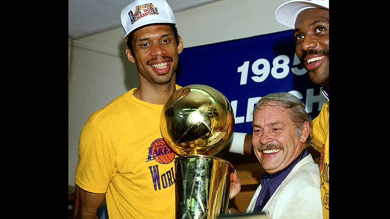

Kareem Abdul-Jabbar

Kareem Abdul-Jabbar is the NBA’s all-time leading scorer for nearly 40 years and one of the greatest players in basketball history. Known for his signature skyhook and unmatched longevity, he played 20 seasons in the NBA.
Career Achievements:
- NBA Championships: 6 (1971, 1980, 1982, 1985, 1987, 1988)
- NBA Most Valuable Player (MVP): 6 (1971, 1972, 1974, 1976, 1977, 1980)
- NBA Finals MVP: 2 (1971, 1985)
- NBA All-Star Appearances: 19 (most all-time)
- NBA All-NBA First Team: 10 times
- NBA All-Defensive First Team: 5 times
- NBA Rookie of the Year: 1970
All-Time Rankings:
- Points: 38,387 – 24.6 PPG
- Rebounds: 17,440 – 11.2 RPG
- Assists: 5,660 – 3.6 APG
- Blocks: 3,189 – 2.6 BPG (3rd All-Time)
- Field Goals Made: 15,837
- Field Goal Percentage: 55.9%
- Free Throw Percentage: 72.1%
- Minutes Played: 57,446
Single-Game Records:
- Most Points in a Game: 55
- Most Rebounds in a Game: 29
- Most Blocks in a Game: 10
- Most Assists in a Game: 11
Notable Career Feats:
- All-time scoring leader for nearly 40 years (surpassed in 2023)
- Invented and mastered the skyhook shot
- Played 20 NBA seasons with elite consistency
- College: 3× NCAA champion at UCLA
Hall of Fame Induction:
- 1995: Kareem Abdul-Jabbar was inducted into the Naismith Memorial Basketball Hall of Fame
Kareem wore #33 for both the Milwaukee Bucks and Los Angeles Lakers. His calm dominance, skyhook, and six MVPs make him one of the most respected legends the game has ever seen.